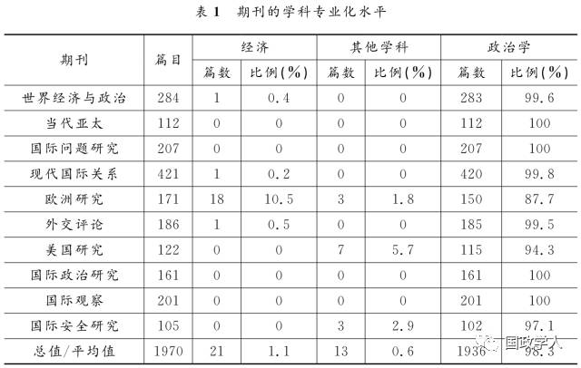
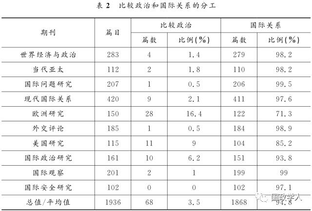
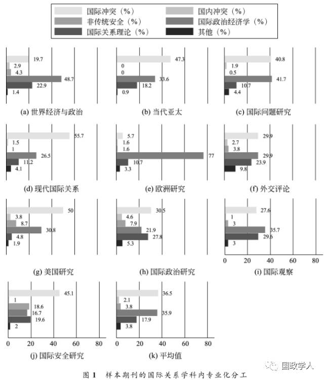
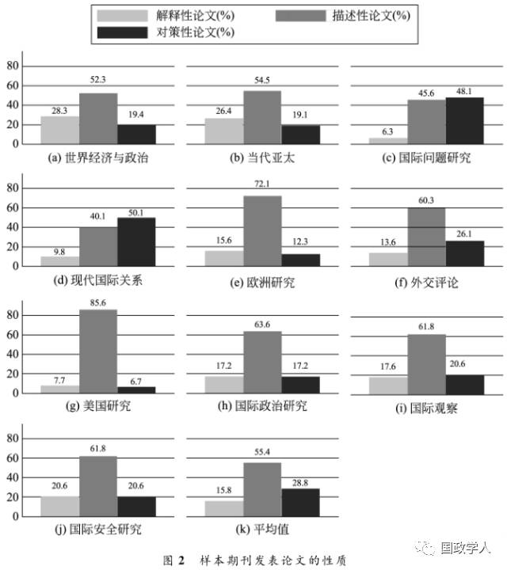
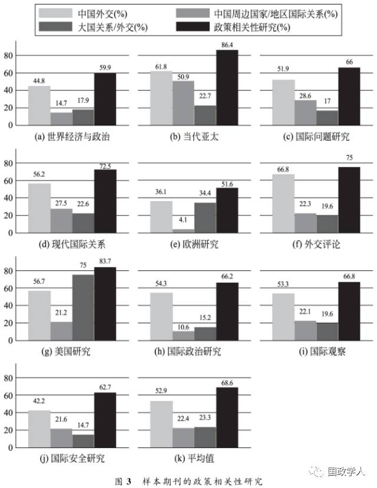

收录于合集

期刊专业化分工与中国国际关系学发展
**
**
作者简介：
卢凌宇 ，浙江师范大学非洲研究院研究员。
本文来源 ：《国际政治科学》2016年第4期
获取方式 ：后台回复" 国际政治科学 “自动获取
内容摘要
学术期刊的专业化分工是科学知识增长的必要条件。本文对我国１０种较有影响的国际关系学期刊在２０１２—２０１４年发表的研究性论文进行了统计分析，发现中国国际关系学期刊的学科独立性和子学科分工水平较高，但是领域分工水平较低、“泛政策化”倾向严重。这些问题阻碍了问题意识的培养和理论水平的提高；妨碍了国际关系知识的渐进增长；不利于彰显期刊特色，激化了期刊间的“平面竞争”，降低了中国国际关系学科发展的总体水平；同时加重了编辑的工作负担，影响了办刊质量。针对期刊学科独立性较低的问题，以对重要问题的研究来整合区域性、跨学科和综合性期刊，或许是一个可行的选择。比较政治学在中国国际问题期刊的整体性缺位，也为这些期刊的生存和发展提供了难得的机遇。为了提高国际关系学领域分工水平，学术期刊之间应该开展理性的沟通和对话。为了逐渐解决理论期刊和政治期刊分工不明确的问题，理论性期刊应该逐渐降低其时事性追求，同时增强时事性选题的理论性。
**
**
关键词： 学术期刊 专业化 分工 国际关系学
科学研究的基本使命是促进知识的增长。规范的学术期刊则是知识增长的主要载体。学术期刊主要通过两个途径来推动科学知识的增长：第一，刊登高质量的论文，反映学术动态，引导学术潮流。为此，必须按照国际通行的形式规范和内容规范来遴选论文，前者的指标包括编委会、作者群和稿源、审稿人、编辑＼主编、期刊定位、语言规范、组稿策略、编辑程序和标准、技术平台、发行和市场策略等等；后者的指标主要有论文水平、研究内容，以及检测指标等。这两组规范中最基本、最重要的是匿名审稿制度。第二个途径是提高专业化水平，积极促进专业化分工。为此，不仅单个期刊必须做出专业化选择，业内期刊也有必要达成谅解并开展长期、默契的合作。
政治学是最古老的社会科学。当代政治学学科主要包括政治哲学、比较政治和国际关系三个子学科。在中国国际关系学界，匿名评审制度已经建立并逐渐普及，这也是近年来中国国际关系研究成果丰硕、进步显著的一个主要原因。尽管如此，对于期刊专业化分工与国际关系学发展的关系，目前还较少有系统的理论探讨和经验评估。本文旨在理论和经验上对这一问题作出尝试性的回答。
期刊专业化分工与知识的增长
虽然人们经常使用“专业化分工”这个名词，但“专业化”和“分工”实际上是内涵迥异的两个概念。“专业化”指个体或组织对社会活动的选择或倾向性。据此，“专家”是指那些从事专业化社会活动的人。他们的使命是在相对独立的研究领域里创造新知识，而不是将人类知识作为一个整体来研究。以政治学而不是经济学作为职业，或者从事政治哲学而不是国际关系学都是专业化的体现。“分工”则描述了这样一种状态：在某个系统中，不同的个体或组织“分别从事各种不同而又相互补充的工作”，它们交互作用从而形成一个结构。上述政治学的三个子学科就是专业内“完全分工”的一个案例，因为它们大体覆盖了政治学所有的内涵。
尽管专业化和分工之间存在着密切的联系，但它们并不是简单的线性相关关系。原因在于，分工包括无分工、部分分工和完全分工三种类型。专业化并不必然意味着完全分工。一方面，有专业化而无分工，或者有专业化而只有部分分工并不罕见。在２０世纪７０年代，中国国际关系学者主要致力于研究“三个世界”理论、时代理论以及“大三角”国际战略格局理论等。这些研究的专业化程度不可谓不高，但远远不是国际关系学的全部，分工是很不充分的。另一方面，分工不一定意味着充分专业化。例如，在改革开放之前，北京大学、中国人民大学和复旦大学曾长期分别从事亚非拉民族解放运动、国际共运和西方国际关系理论的研究。至少对于西方国际关系理论而言，当时仅停留在引进和介绍上，虽然也有分工，但并没有像今天这样细分到国际关系体系理论、本体论、国际政治经济学、国际冲突这样的水平。本文的“专业化分工”描述的是一种较为理想的状态：不同的个体或组织分别从事不同但又相互补充的工作，它们工作的总和构成一个系统。简言之，专业化分工就是专业多样化基础上的分工。
张五常曾言：“专业化不仅和物质生产密不可分，而且更重要的是，在思想生产中也是如此。”专业化是近代以来人类知识增长的内生动力。知识的本质是商品。从经济学的视角来看，商品的种类与专业化分工的水平成正比。专业化的直接影响是从业者缩小了关注的范围，节约了不必要的时间成本，从而在单位时间内创造更多的知识，做出更大的贡献。另一方面，分工意味着系统中不同专业导向的从业者同时做自己擅长的工作，在其他条件不变的前提下，知识增长的速度得以最大化。正因为如此，“专业知识累积的速度和获得知识的能力取决于社会分工水平”。简言之，专业化会促进社会总体知识的增长，社会总体知识的增长反过来又会促进分工的发展以及专业化水平的提高。
专业期刊对学术分工的作用具体体现在两个方面：一是促进学术成果和学者的分层；二是推动专业知识的增长。专业期刊对中国国际关系学学术成果和学者的合理分层功不可没。按照较为权威的评价和排名，迄今为止国内的国际关系专业期刊大体可以为分四个等级：位于顶尖的是《世界经济与政治》和《当代亚太》；第二层次包括《欧洲研究》《现代国际关系》和《外交评论》等业内知名度很高的期刊；第三层次由《国际观察》《国际论坛》《东南亚研究》等知名刊物构成；位于第四层次的则包括《世界经济与政治论坛》《国际关系研究》《国际安全研究》等期刊。国际关系业内的学术成果和学者分级与期刊分层有着显著的正相关关系。国际关系学界的一流学者几乎一无例外都在《世界经济与政治》《欧洲研究》《现代国际关系》等杂志发表过一定数量的论文；而最具影响力的论文又往往出自顶尖和一流的期刊。相反，那些长期在第三、四层次期刊发表文章的学者要在业内赢得较高的声望殊为不易；反过来说，排名较低的刊物也很难持续地吸引到高质量的稿件。
专业期刊的分工有两种形式：第一种形式是纵向分工，即按照从粗疏到细致这一知识演化的规律所进行的分工，纵向分工至少分三个层次：一是本学科期刊从外学科期刊分离出来，可以称之为“一次纵向分工”；二是本学科下子学科的分工；三是子学科里研究领域的分工，后两者可以称之为“二次纵向分工”。第二种形式则是横向分工，即理论研究与对策研究的分工。理论研究和对策研究是异质性的研究工作。首先，前者追求普遍化和细致论证，而后者强调具体性和简明扼要。其次，理论强调价值中立，而对策研究必须遵循“政治正确性”，这就让对策学者有时候不得不违反逻辑。第三，对策研究的一个重要功能是政治预测，但预测正确的前提是模型的变量越多越好，因此它在本质上是反理论的。不仅如此，一方面，严格区分理论和政策有助于捍卫学术的独立性和尊严。约瑟夫·奈谴责学院的政治学研究既影响不了公共政策，也无法影响公众，只在政治学家的小圈子里流行。其实这才是正常的状态。鉴于以上两个原因，理论期刊和政策期刊实现分工是合理的。约瑟夫·莱普古德把政治学期刊分为四种类型：一是普遍理论建构，二是事件导向／驱动的理论研究，三是政策应用或案例导向的政策解释，四是对策建议。这四类研究与具体政策问题的关联性是从低到高，其中前两类期刊被大多数大学的政治学系接受，而后两类期刊则只有智库才关注。
样本、数据和统计分析
本文统计分析的样本是2012-2014年中国10种优秀的国际关系期刊所发表的研究性论文。这10种期刊是《世界经济与政治》《当代亚太》《国际问题研究》《现代国际关系》《欧洲研究》《外交评论》《美国研究》《国际政治研究》《国际观察》和《国际安全研究》。按照中国社会科学院发布的《中国人文社会科学期刊评价报告（2014）》，样本所覆盖的前８种期刊位列“政治学”全部68种期刊的前11位，集中体现了中国国际关系研究的发展水平。《国际观察》的排名是第36位，但由于它是北京以外全国影响力最高的国际关系学期刊，故选入。《国际安全研究》排名暂列第52位，但它是国内专业化水平最高的期刊，因此入选。
2012-2014年间，这10种期刊共发表了各种类型的文章2207篇。本研究排除了所有的书评、书讯、旅游随笔、演讲综述、领导人讲话、岁末寄语、著作巡视以及编后语外，最后的样本包括研究性论文1970篇。这里的研究性论文主要是原创性的学术论文，但也包括对具体问题———例如南海危机的起源———的文献综述。编码的规则是以论文的标题为主，辅之以内容摘要，在必要的情况下浏览原文的框架结构。本文的经验分析将按照纵向分工和横向分工依次展开。
(一)初次纵向分工：政治学VS其他学科
纵向的“一次分工”既是学科发展的结果，又是学科拓展和壮大的前提。戴维·伊斯顿把政治（系统）定义为对资源／价值的权威性分配，其焦点是公共权力。从学科建制上看，国际关系学在中国已经获得了独立的政治学二级学科地位。从内容上看，政治／国际关系学和其他学科的分野是比较清晰的。就常规科学问题而言，政治学问题的因变量和自变量至少有一个是政治因素；如果政治学的自变量和因变量至少有一个同时又是国际变量，那么这个问题就可以视为广义的国际关系问题。
按照上述标准，１０种样本期刊较好地体现了政治学专业的独立性。有４种期刊刊载的全部是政治学论文。《欧洲研究》是刊载非政治学论文比例最高的期刊，达到总文章数的１２．３％，紧随其后的是《美国研究》，该指标的平均值为５．７％。这个特点反映了两种期刊的办刊宗旨。例如，《美国研究》刊载研究“美国政治、经济、外交、军事、文化、文艺思想、社会问题等领域”的论文。《欧洲研究》则欢迎对“国际政治经济问题研究、欧洲一体化研究、欧洲国别和地区、中欧关系研究等不同层面”的论文。此外，《国际安全研究》等其他４种期刊也发表了极少数非政治学论文。样本期刊刊载政治学论文的加权平均比例为９８．３％。如果仅从样本期刊来看，中国政治／国际关系学的一次分工水平是很高的（见表１）。

但是，考虑到样本以外大量的学术期刊，国际关系学期刊的总体一次分工水平很可能比样本揭示得要低。这样的期刊大体可以分为三类：第一类是中国社会科学院国际片诸所和一些高校科研院所主办的区域研究期刊，前者除样本中的《欧洲研究》和《美国研究》之外，还有《西亚非洲》《俄罗斯中亚东欧研究》和《拉丁美洲研究》等；后者如《俄罗斯研究》《东北亚论坛》和《东南亚研究》。这些期刊关注某个区域或国家，刊载论文的选题有明显的跨学科性，涵盖了政治、经济、社会、文化等多学科的内容。第二类是大学／学院人文社会科学学报。第三类则是地方社会科学院和社会科学联合会系统所主办的综合性社会科学期刊。从统计学上看，如果把间或刊登政治学论文的数量庞大的综合性期刊和大学学报计算在内，那么政治／国际关系学期刊缺乏学科独立性或许一个普遍的现象。
类似地，美国的国际关系学也是政治学下面的一个二级学科。政治学／国际关系学和其他学科也不是没有交集，所以也有一些区域性和跨学科期刊，前者如《非洲研究评论》，后者如《千禧年：国际关系杂志》和《拉丁美洲政治和社会》。尽管如此，这类期刊不仅数量较少，而且学术影响远不如专科期刊。《千禧年：国际关系杂志》声称刊载“国际关系学最具创造性的文章，以及具有国际的其他社会科学原创思想”，但其影响力和排名远不如我们熟悉的《国际研究季刊》、《国际组织》和《国际安全》等专业性期刊。
(二)二次纵向分工：国际关系VS比较政治
专业期刊的“二次分工”是按照学科的子学科、领域、子领域甚至问题领域等所进行的进一步专业化细分。二次分工与学科专业化水平发展成正比，两者相互强化。如前所述，实体政治学的初级“二次分工”包括政治哲学、比较政治和国际关系。所以，我们耳熟能详的“国际问题研究”实际上包含了政治学的两个子学科：一是国际关系，二是比较政治，主要是对外国国内政治的研究。国际问题的参照系是“本国（政治）问题研究”。这里隐含的假定是本国政治与外国政治和国际关系有着本质的区别，体现了“外事无小事”的政治哲学对学科建制和学术分工的强大影响。
然而，从政治学理论上看，存在根本差异的并不是某个国家的国内政治与其他国家的国内政治，而是国家间政治与国内政治，也就是通常所说的国际关系与比较政治。肯尼斯·华尔兹在《国际政治理论》这一经典著作中，在本体论上把国际政治与国内政治一分为二。他用“无政府状态”这一假定框定了国际政治的基本特点。国际关系学从此与国内政治研究分道扬镳。当然，国际关系学和比较政治学之间仍然存在着千丝万缕的联系。例如，国内政治与国际关系的关联性就是近二三十年来国际关系和比较政治的一个炙手可热的知识增长点。研究者如果不具备比较政治制度、政治文化或政治行为的知识积累，很难在这个问题领域做出显著的贡献。尽管如此，国内政治和国际政治的分野总体上很明确和清晰，国际关系的基本假定是无政府状态，而比较政治的出发点则是权力等级制以及由国家机器垄断合法暴力。相应地，国际关系学的基本范式是现实主义、自由主义、建构主义和（新）马克思主义，而比较政治的基本范式则是理性主义、制度／结构主义和文化（建构）主义。尽管国际关系和比较政治有这么一个交集，但除此之外，两者还是泾渭分明的，其研究问题、基本文献和主要作者都大不相同。
美国政治学期刊有少量是全学科的，比如最具影响力的《美国政治学评论》、《美国政治学杂志》和《政治杂志》。但在这些综合性期刊之外，美国著名政治学期刊中横跨比较政治和国际关系的仅有《世界政治》一家。《世界政治》言明了刊登“国际关系和比较政治领域的分析性／理论性论文、文献综述以及研究笔记”。
相比之下，中国的国际类期刊“有国际关系类与区域政治类之分，但两者常有交叉”。表2的数据大体印证这个观点。所有样本期刊都是“国际问题期刊”，集比较政治与国际关系于一身。尽管如此，比较政治论文所占的比例普遍很低。在2012-2014年间，《欧洲研究》刊载的比较政治论文占全部文章的比例为16.4％，《美国研究》为9％，《国际政治研究》为6.2％，而在其他7种期刊中，国际关系学论文所占的比例都达到95％以上，以《国际问题研究》为最，达到99.5％。10种期刊的这一均值为94.8％。

与此同时，表2揭示了中国国际关系学期刊一个严重的结构性问题，那就是比较政治学基本缺位。比较政治学的研究对象是国别和区域政治，它的发育程度体现了一个国家的国际视野，是真正的“大国的学问”。但是，我国“目前基本不存在真正意义上的比较政治研究”，现有的比较政治论文主要是“口号型”文章、“概念辨析性”文章和“泛泛而谈的评论或综述”三种类型。现有的少量比较政治研究———包括本样本中的文章———基本停留在引介国外主流比较政治学范式、理论和方法以及探讨学科建设的路径。比较政治的缺位还严重阻碍了国际关系学在中国的发展，无论是外交政策分析、理念主义，还是回答中国如何崛起这样的现实问题，都需要大力借助比较政治的理论和工具，因为它们位于比较政治与国际关系的交叉地带。
(三)纵向二次分工：国际关系学的领域分工
国际关系学主要包括以下几个实体领域：（1）国际冲突或国际战争。这是国际关系学的传统领域。直到20世纪70年代初期，国际冲突几乎就是国际关系学的代名词。（2）国际政治经济学。它“关注的是现实世界中政治和经济的联系”，其中经济因素包括贸易、金融、原材料和跨国公司等。①值得注意的是，IPE有狭义和广义之分。狭义的IPE问题其因变量或自变量之一必须为经济变量，一为政治变量，而且其中之一必须为国际变量。广义的IPE则是冲突／战争研究之外所有的国际关系学，比如国际制度和国际组织研究。中国学者最熟悉的《国际组织》就是广义IPE的王牌期刊。（3）国内冲突。国内冲突是冷战后兴起的国际关系学新领域。严格地说，国内冲突属于比较政治的范畴，但按照政治学的惯例，冲突尤其是战争研究都划入国际关系学。上述三者是国际关系学的实体领域。在经验上区分三者最常用的标准是研究问题的因变量，并且国际冲突和国际政治经济学研究问题的自变量或因变量其中之一必须是国际变量。当然三者也有交集。例如，“国内冲突的国际经济影响”这样的问题就既是国内冲突的问题，又是国际政治经济学所关注的。（4）外交政策分析。外交政策分析不是国际关系的实体领域，而是一种观察国际关系的视角。国际关系三个实体领域的问题都可以是外交政策分析的问题。外交政策分析的基本假定是国际关系和国际关系变化的根源是人，包括参与单独行动和集体行动的人，所以外交政策分析理论都是行为者具体理论。外交政策分析主要致力于以比较或个案的方式研究外交决策的过程、结果、原因或结果。它与国际关系实体领域研究的区别在于其分析往往被置于组织和个人层次。
国内学者习惯把“国际关系理论”当作国际关系学中一个独立的领域。实际上，无论是就问题的特点还是方法性质而言，“国际关系理论”并不具备独立的地位。我们潜意识中的“国际关系理论”类似于彼得·卡赞斯坦等所说的“普遍导向理论”，也就是宏观的、体系的且往往与经验检验相剥离的国际关系理论，以及对国际关系本体论、认识论和方法论的探讨。实际上，“国际关系理论”应该按照其核心问题来归类。比如，结构现实主义的核心问题是军事力量的分配如何影响大国关系。由于其因变量是战争／和平这个二元变量，所以大致划入国际冲突范畴。而新制度自由主义的因变量是国际制度分配，既可以按其因变量视为国际冲突问题，也可以按其自变量（如国际贸易机制）划入广义IPE的范畴。
美国国际关系学期刊的学科内分工水平较高。美国有全领域的国际关系期刊，但数量很少，在业内知名度最高的可能是国际关系协会主办的《国际研究季刊》。它是国际关系学的旗舰期刊，主要刊载“国际政治经济学、冲突过程、国际组织和外交政策分析”的论文。②这几个领域几乎就是国际关系学的全部。
除了ISQ，美国国际关系学的一流期刊基本上代表了国际关系学不同的领域，同时体现了不同领域在国际关系学的影响和权重。绝大多数美国国际关系学者都是安全／冲突问题专家。相应地，探讨安全问题的期刊数量也最多，其中声望最佳的是以下两家：（1）《国际安全》是最重要的定性研究安全期刊，刊登对“当代的、理论的和历史上的安全事件的复杂分析”。（2）《冲突解决杂志》刊登的是对人类冲突进行研究的优秀论文。它主要关注的是国际冲突，但也刊登了很多国内、群体间和人际冲突的文章。《冲突解决杂志》是战争／和平研究的旗舰期刊，在方法选择上以量化分析为主。
国际政治经济学的顶尖期刊则是著名的《国际组织》。该刊指明了仅接受“将国际或跨国现象视为主要的原因和结果”的论文，近年来声称“涵盖国际关系的所有领域”，也曾刊登过詹姆斯·费伦的《战争的理性主义解释》这样经典的冲突研究论文，但《国际组织》是以国际政治经济学期刊享誉政治学界的。《外交政策分析》是外交决策研究的代表性期刊，其特点是“以比较或个案的方式研究外交决策的过程、效果、原因或结果”。外交政策分析发展严重滞后，迟至2005年才创办了这一专门的学术期刊。国内冲突是冷战结束后才兴起的新研究领域。但是直到现在，美国还没有一家专门致力于国内冲突研究的期刊。但在2007年，英国学术共同体创办了《国内战争》这一期刊，是英语国际关系学界第一家致力于对国内冲突进行全方位研究的期刊。
反观中国国际关系学期刊，则呈现很不相同的图景。首先，国内目前主要的国际关系学期刊都是全学科期刊。①图１是样本期刊在国际关系学内的领域分布。从平均值上看，36.5％的载文是国际冲突研究，35.9％为国际政治经济学研究，17.9％为传统的国际关系理论。当然，指标在10种期刊间分布的差异性也是比较明显的。就国际冲突而言，《现代国际关系》《当代亚太》《国际安全研究》的刊文比例最高，分别为55.7％、47.3％和45.1％，即使比例最低的《世界经济与政治》也达到19.7％。至于国际政治经济学，《欧洲研究》以77％的载文量遥遥领先，《世界经济与政治》和《国际问题研究》的这一指标也分别达到了48.7％和41.7％，低位则是《国际安全研究》，其比例为16.7％。国际关系理论论文所占的比例则在10.7％（《欧洲研究》和《国际问题研究》）和29.6％（《国际观察》）之间波动。但是，虽然《欧洲研究》更接近国际政治经济学领域，《现代国际关系》和《国际安全研究》的冲突／安全导向非常明显，但它们都覆盖了两个以上的领域，或者说兼容了冲突研究、国际政治经济学和国际关系理论。业内主要期刊的全领域性在其发刊词上得到了体现，不同刊物的区分度很低。例如，《国际政治研究》覆盖的内容包括“国际关系……中国政治与外交、国际政治理论等领域的学术论文和评论”。《世界经济与政治》声明“以国际关系理论研究为主旨，注重国际政治与世界经济的结合，注重理论和实践的结合”，主要栏目包括“国际关系理论、国际战略、中国外交和国际政治经济学”。类似的，《外交评论》刊登的科研成果主要覆盖“国际关系、中国外交、外交学、世界经济、国际法等学科”。这一发现支持了国内有些学者的观点，即我们很需要《国际组织》和《国际安全》这样的专业化期刊。
此外，从整体上看，中国的国际关系学期刊有着明显的结构性缺陷，那就是非传统安全尤其是内战和国内武装冲突研究严重不足。这一事实表明，虽然体现在发文上的国际关系学的体量得到了很大的增强，但是学科内各领域的发展状况严重失衡。具体而言，国内冲突和非传统安全所占的比重很低，10种期刊的平均值分别为2.1％和3.8％。《国际安全研究》是非传统安全研究最重要的期刊，其18.6％的论文都属于这个研究领域，相反，在2012-2014年，《当代亚太》未曾刊载这一题材的文章。另一方面，国内冲突研究在样本期刊中基本缺位，《国际政治研究》（4.6％）和《美国研究》（3.8％）对其给予了一定的关注。

相比之下，美国政治学期刊在领域之下，还有更深层次的纵向分工。在冲突研究领域，除了《国际安全》《冲突解决杂志》等专业期刊，还有《调停季刊》和《国际维和》等期刊。调停或维和是国际／国内冲突研究的一个子集。实际上，国际关系是美国政治学相对落后的子学科。这种落后性也反映到了期刊的专业化分工水平上。比较政治尤其是美国政治期刊的深度专业化程度比国际关系高。例如《普布利乌斯》的研究对象就是联邦制和（国内）政府间关系，是美国政治的一个子领域。类似的期刊还有《公共舆论季刊》、《政党政治》、《立法研究季刊》、《选举研究》、《民主杂志》和《民主化》等。
(四)横向分工：理论VS政策
为了评估样本期刊的理论和政策导向，本节设置了两组指标。第一组指标确定论文的性质是解释性、描述性还是政策性，具体而言：（1）解释性的论文涉及“为什么”的问题，也就是说用一个或几个自变量来解释一个因变量，是对原因或因果关系的探讨。此外，国际关系体系理论、方法论、认识论、本体论和学科建设的基本问题，也划入解释性的范畴。（2）描述性论文解决“是什么”的问题，它是介绍性的（如“信仰与政治：尼布尔国际关系思想的基础”）或政策诠释性的（如“理解十八大以来的中国外交”）。书评、综述、学术思想评价等也都是描述性的。（3）对策研究致力于回答“怎么办”的问题，即给官方出谋划策。学者的服务对象不必然是本国，也可能是他国或者联合国这样的国际组织。从标题上，这样的论文常使用“策略选择”、“经验教训”、“政策评估”、“任务”、“发展前景”等语句。
表2区分了上述三种研究。它们的平均值分别为15.8％、55.4％和28.8％。描述性研究独大表明我国国际关系研究的科学性较弱，在其他条件相同的情况下，对知识增长的贡献还很有限。在10种期刊中，仅《世界经济政治》（28.3％比19.4％）和《当代亚太》（26.4％比19.1％）理论研究比对策研究的比例高，但是差额也没有超过10个百分点，分别为8.9％和7.3％。在《美国研究》《欧洲研究》《国际安全研究》《国际政治研究》中，两类研究的比例基本持平。而在《国际问题研究》《现代国际关系》《外交评论》《国际观察》中，对策研究的比例超过理论研究，其中比例差额最大的是《国际问题研究》，对策研究比理论研究高41.8％，而相对差最小的是《国际观察》，这一指标值为3％。

《国际问题研究》以对策研究见长，符合其办刊宗旨：“以服务中国外交为宗旨，坚持战略性、前瞻性与政策性相结合，提倡从国际战略的高层次、宏观性、多角度来研究国际问题，在学术分析中体现中国外交战略思维，为外交实践提供理论支持。”相比之下，其他样本期刊都是理论研究和对策研究并重。这个特点甚至是不少刊物的办刊宗旨。例如，《现代国际关系》就旨在充分展现“国内外专家学者对国际战略问题、国际关系理论、世界政治、外交、经济、军事及重大热点问题的最新研究成果，集政策性、战略性、动态性、前瞻性、学术性‘五位一体’”，结果就是两种异质研究并存。
图３报告了样本期刊中政策相关性研究的分布状况，这是第二组指标。这一组经验发现围绕３个指标展开：一是是否与中国外交相关，二是是否涉及中国周边国家／地区的国际关系，三是是否涉及大国关系／外交。本文还在这３个指标的基础上构建了一个综合指标，称为“政策相关性研究”。由于前３个指标互相有重合，所以综合指标并不是前３个指标的简单加总，而是在加总过程中删除了重合的记录。

显而易见，样本期刊对中国外交有着极大的倾斜，此类论文所占的比例均值达到52.9％，其最高值为66.8％（《外交评论》），最低值也达到36.1％（《欧洲研究》），而其标准差仅为12.1％，这表明所有期刊都对中国外交给予了极大关注。涉及中国周边国家／地区国际关系和大国关系／外交（包括中国与其他大国关系）的研究，其均值为22.4％和23.3％。前者的均值虽然不高，但全距（range）较大，《当代亚太》的相关论文比例高达50.9％，但《欧洲研究》仅为4.1％。后者的情况类似，处于两极的分别为《美国研究》（75％）和《国际安全研究》（14.7％）。综合指标“政策相关性研究”的平均值自然比３项指标的任意一项都高，达到68.6％，其中最高值为86.4％（《当代亚太》），最低值也达到51.6％（《欧洲研究》）。
根据以上的分析，可以认为，中国的国际关系学期刊陷入了“泛政策化”的状态，具体而言主要有两个表现。
第一，政策性期刊有着很大的学术影响力。在中国的国际关系学领域，《现代国际关系》《国际问题研究》一直位列顶级期刊行列，其引用率很高，影响力很大。按照中国社会科学文献评价研究中心的分析，《国际问题研究》的影响因子在2014年的43种“世界政治”类期刊中的排名为第二位，仅次于《当代亚太》这一同中国外交相关性最强的期刊，超过了声誉最卓著、学术品质最高的《世界经济与政治》。《现代国际关系》则排第六位，低于第四位的《外交评论》和第五位的《东北亚论坛》。
美国的国际关系期刊也有对策性与理论性的分野，但基本的特点是理论性期刊占绝对优势，对策性期刊很难进入理论学者的视野，其中最著名的是《外交事务》和《外交政策》两种。前者关注的是“美国外交政策和全球事务”，要求能够被“专业人士和非专业人士轻易地、愉快地阅读”。后者的读者群则是“知识渊博、睿智并且有着广泛兴趣的个人，不必是国际事务专家”。这些读者既“需要受到启发、感到惊奇，接触那些让人难以忘怀的信息和严谨的分析”，又“讨厌冗长的论证、让人不知所云的行话、狭窄的选题以及过于技术性的写作”。在研究型院校的政治学系，发表在《外交事务》和《外交政策》上的论文是不太可能会被计入研究绩效的。塞缪尔·亨廷顿于１９９４年发表在《外交事务》上的《文明的冲突》似乎是个例外。不过，从统计学上看，亨廷顿是一个特例。像他这样大力提倡并且身体力行地整合理论研究和政策研究的政治学家很少见，他本人就是《外交政策》杂志的创始人之一。
“泛政策化”的第二个特征是理论性期刊过于强烈的政策关怀。正如于铁军所言，我国国际关系学目前的状况是学术研究太少，“所谓的政策研究太多”。对策研究对于外交决策或许是必要的，但却无法直接促进知识的渐进增长。对策研究从决策者的角度来思考问题，就事论事，关注具有战略意义的政治和国际关系事件，紧跟时事和突发事件，着眼点是给政府提出具有可行性的政策建议。按照黄有光的观点，政策或时事研究的作用只不过是启发理论研究者的问题意识和提供有限的经验素材。相反，理论研究追求普遍化的知识，其重要作用之一是“提升一个国家……的抽象思维质量”，而抽象思维能力“标志了一个国家和民族的知识水平和文明程度”。与这个原则背道而驰的不仅是政策性期刊，还有中国的国际关系学者对中国外交相关性问题过于强烈的关照。原因在于，中国虽然是世界性大国之一，但在整个国际关系体系中，中国或中国相关问题的外延不够大，关于中国问题的理论猜想的抽象程度往往不高，理论的适用性可能远不如普遍理论或者地域性理论。
从这个角度来说，国际关系学期刊主要应该是国际关系理论期刊。然而，强烈的政策关怀是中国国际关系学者的普遍特点。我们对政策研究是如此热情，以致“中国许多政策类期刊都想把自己办成美国《外交事务》杂志。有的期刊甚至连版面、封面也照搬西方”。强烈的政策关怀已经演化成期刊无所不在的“泛政策化”倾向，其突出的表现就是期刊对热点问题的追踪。即使是《世界经济与政治》《欧洲研究》《国际政治研究》这样理论性很强的期刊，对时事也跟踪得很紧。以２０１４年３月１６日的克里米亚公投为导火索，乌克兰的危机被彻底引爆。同年，《欧洲研究》《国际政治研究》《国际问题研究》《国际观察》等期刊都不失时机地推出了乌克兰危机专辑或专栏。相比之下，美国国际关系学刊物并不排斥热点问题，但从事件发生到推出专辑或专栏，通常有一个时滞，１—２年是很正常的。这个时滞之所以合理，一是由于美国学术期刊的发文周期远比国内要长，不会出现“等米下锅”的情况；二是理论研究的特点是提出可普遍化的命题，而不是简单地就事论事，或提出似是而非的政策建议，这需要强大的知识储备并借鉴最新的研究成果，因此不可能一蹴而就。更重要的是，美国学者对热点问题的剖析往往会演化成对既有研究纲领的补充，或者新的研究纲领的起点。例如，俄罗斯强制兼并克里米亚事件可以纳入塔尼莎·费莎所开创的“国家死亡”研究纲领。但要通过抽象新事件来发展这个纲领，需要做细致、深入的文献综述和批判思考，要投入大量的时间。而国内学术界的现状是如果不能及时跟上时事的发展，热点很快就会过时，被新发生的事件所取代。这样是无法积累知识的。
专业化分工不足的消极影响
中国国际关系期刊专业化分工水平的低下产生了一系列消极影响，主要体现在如下几个方面。
第一，阻碍中国国际关系学者培养问题意识和提高理论水平。学术研究的起点是问题。汪丁丁指出：“全部人类知识，其实就是以追问根本问题的方式被激发、获取和积累起来的。”从理论上讲，按照自己的兴趣去自主地研究是培养和增强问题意识最有效的途径。然而，实际上，期刊对作者的选题起着强大的导向作用。作者不得不按照期刊的偏好来选择研究问题。由于中国国际关系学期刊的学术定位和分工不明确，导致不同的期刊都不约而同地选择类似的选题，尤其是与政策热点相关的问题。也就是说，纵向分工水平低的后果是妨碍了学者们逻辑地拓展现有的研究纲领，而后者是科学知识增长常规的也是最主要的路径。作者不得不迎合刊物的导向，不然发表就会很困难。这样会造成两个相互强化的结果：一是目标漂移，学者既不能培养也无法发挥自己的研究专长。二是产出庞杂，但很难产生高质量、高水平的成果。理论水平低下则是横向分工不足的后果。例如，“泛政策化”至少造成了两个后果：一是紧跟热点，就事论事，难以从热点中抽象出具有理论价值的研究问题。二是对策研究往往重视预测，这也是政府决策所关心的内容。但是，预测成功的前提是理论的内涵足够大、信息足够快。鉴于评价理论的关键标准是内涵尽可能小、解释力尽可能强，那么，预测本身就是反理论的。
第二，妨碍国际关系知识的渐进增长。从理论上讲，分工和专业化水平决定着专业知识的积累速度和人类获得技术性知识的能力以及报酬递增。由于学术专业化水平较低尤其是对策思维的压倒性影响，我们的期刊缺少对同一问题的序贯和追踪研究。如上所述，对同一研究纲领的渐进拓展，恰恰是知识增长的常规途径。一个重要的研究问题（纲领）就好像一棵小树，如果没有后续研究来浇灌和施养，小树就无法长成枝叶繁茂的参天大树。中国的国际关系学者还没有能够发展出“贸易和平论”和“威慑理论”这样的持续３０年以上的研究纲领。中国国际关系学期刊的专业化和分工水平还较低。一方面，低水平重复是中国国际关系学研究的一个难以否认的无奈现状，另一方面，那些能够显著地推动知识增长的研究纲领问津者很少。中国学者提出了若干具有高度原创性的思想，其中最有代表性的是秦亚青的“过程建构主义”、王逸舟的“创造性介入”理论和阎学通的“道义现实主义”。但是，迄今为止，除了原创作者本人，基本上没有其他学者以高水平的著作后续跟进。这种局面对创建有中国特色的国际关系理论体系具有显著的抑制作用。例如，清华大学国际关系学者在先秦国家间政治思想和东亚古代国际关系研究方面取得了较大的成就，并建立起了可进化的研究纲领，但是在２０１１年之后，创新步伐放缓了。团队“曾尝试在全国范围内吸纳有志于此的研究者，但应者寥寥。这说明该研究在可预见的未来将处于一种‘小众’状态”。
第三，不利于彰显期刊特色，激化了期刊间的“平面竞争”，压低了国际关系学科发展的总体水平。中国国际关系学科发展水平不仅取决于水平最高的期刊，而且与学术共同体的整体水准密切相关。相应地，期刊的水平和档次也取决于所刊载的论文的品质。相比位于金字塔顶端的期刊，组成金字塔基座的数量众多的期刊代表了中国国际关系学的普遍水平，而这些期刊恰恰是期刊低水平专业化分工更大的受害者。
同一学科的期刊之间永远存在着竞争，但是在专业化分工条件下的竞争往往是良性的、互补性的。相反，中国国际关系学期刊在内容（选题）和结构上的趋同性则造成了两个相互强化的负面结果：一是期刊之间往往只有水平的差异，缺乏专业方向和专业化水平上的区别。二是期刊陷入恶性平面竞争，而平面竞争是“最不好的竞争”“绞杀式的竞争”。由于极强的相似性，高排名期刊和低排名期刊需要同样知识结构的编辑和审稿人。然而，低排名期刊往往缺乏精英期刊所具有的品牌、专家和资源优势，既很难聘请到并留得住资深的编辑，也邀请不到高水平的审稿人。也正是由于这种趋同性，审稿人更倾向于接受精英期刊的稿件。但如果没有高水平的审稿人来判断稿件的质量和提出建设性的修改意见，期刊刊登论文的水平就很难取得稳定的进步。长此以往，这样的期刊就会被锁定在较低的水平，与高排名期刊的距离就会越拉越大。而且精英期刊毕竟只有处在金字塔塔尖的那么几家，它们的质量再高，也代表不了中国国际关系学的整体水准。
第四，分工水平的低下还加重了编辑的工作负担，降低了期刊的质量。学术期刊编辑的本职工作是文字编辑、稿件送审以及学术联络等形式职能。除此以外，中国国际关系学期刊的编辑往往同时行使学术评价这一实质功能。编辑参与学术评价意味着编辑至少部分地替代了审稿专家的职能。期刊编委和审稿人虽然学有专长，但通常致力于狭窄的专门问题研究，没有经营和发展期刊所需要的宏观和包容的视野，而这恰恰是编辑的特长。正因为如此，期刊编辑会根据期刊定位和发展的需要，对来稿进行甄别和选择。由于学术评价并不是编辑分内的职责，因此编辑需要为此付出额外的时间成本。恰恰由于这个原因，中国国际关系学期刊较低的分工水平极大地加重了编辑的工作负担。由于“没有准确和具体的定位，就会收到过多的稿件，根本没有精力去处理，给选稿工作造成巨大的困难”。在编辑部人员编制给定的前提下，国际关系学期刊集比较政治与国际关系、国际关系全领域以及对策研究与理论研究于一身，对编辑个人的知识深度和广度提出了很高的要求。这一要求与学术分工高度细化和人类知识加速增长的趋势背道而驰，这就要求编辑们投入更多的时间和精力去不断更新专业知识。
上述影响的一个连锁反应是降低了期刊的学术水平。学术评价是专业化程度很高的工作。比如，研究国际汇率机制的学者就无法对相互依存与国际冲突方面的来稿作评价。严格地说，甚至国内冲突发生的研究者和结束的研究者都无法有效地对话，因为两者虽然都探讨国内冲突这个领域，但涉及的参考文献、经验数据以及分析模型都大相径庭。职业编辑虽然见多识广，但毕竟要首先行使编辑的形式职能，很难再继续进行学术创作。新一代的编辑很多都接受过国际关系学或相关学科的系统训练，是某个问题领域的“专家”。“专家”在自己专长的领域固然有发言权，但一旦超出这个领域，就只能凭经验和直觉来作判断，而缺乏持续更新的专业化知识支持的经验和直觉经常会导致误判，这样就无法保证刊载论文的质量，从而降低期刊的学术水平。
结论
综上所述，在专业分工问题上，中国国际关系学期刊面临的主要问题可以概括为“将政策与学术混为一体，界限不明。多数期刊定位相近，区别度低，千刊一面”。这种状况虽然首先内生于苏联式的期刊体制，但同时也受到文化传统和后现代思潮的消极影响。中国没有独立的社会科学传统，我国的学术传统是文史哲不分，强调知识的综合而非分科。传统上我们所敬仰的学者往往都是横贯若干学科的所谓“大家”。改革开放以后传入的后现代和批判思潮与我们的学术传统主张恰巧相似，赢得了不少的关注和支持。例如，以“世界体系论”著称的沃勒斯坦就激烈地抨击西方国家的“学科制度化”。在他看来，社会科学正在被科学和人文的分野以及社会科学内部的分歧撕裂。为了消弭学科制度化的严重影响，沃勒斯坦提出了“一体化的学科方法”，其目标是建立一种整体性知识的历史社会科学，消除社会科学的学科分歧以及科学与人文之间的分野。
沃勒斯坦这样的激进思想家在国内有着广泛的响应者。例如，近年来，学界有以区域为基础建立学科的呼声。但诚如王缉思所言，仅从地域来划分学科是不恰当的。如果“美国学”可以成为一个学科，那么中国学、日本学、非洲学、苏丹学都可以是单列的学科。实际上，问题才是我们理解自然界和人类社会的起点，而整个人类所面临的问题又大致可以划归政治、国际关系、经济、社会、法律等诸范畴，这样的范畴才能成为学科和人类知识增长的基础。同样重要的是，跨学科解决问题的前提是单一的传统学科都无法单独回答的问题，必须借助不同学科的会诊和协作。有了都感兴趣的研究问题，不同学科的精英聚集在一起才能发挥显著的建设性作用。著名的“桑塔菲学派”聚集了人类学、生物学、经济学、政治学、社会学等不同学科的精英，其目标很明确，是解决“广泛存在于人类社会而不见于非人类社会的非亲缘个体之间的合作关系”。
美国的跨学科理论期刊数量不多，知名度高的很少见，《公共选择》是著名的一种，以经济学为主，兼容政治学、社会学等学科。相比之下，我国跨学科的国际问题期刊的问题导向性很弱，只不过是不同学科的杂糅。实际上，西方和中国社会科学界面临的问题完全是异质的。他们面对的挑战是人文社会科学专业化过度，而我们的问题则是专业化严重不足。中国国际关系学著作符合国际通行学术规范的还不多，达到国际主流学术水平的就更少，绝大多数论文都没能对知识的增长作出贡献。在这种状况下提倡跨学科整合，不仅整合不出高水平的研究成果，还会使我们的知识产品长期在低水平徘徊，与国际主流学术界开展对话越来越困难，发展差距越拉越大。
国际关系学期刊的困境折射出中国学术期刊市场的通病：市场日益繁荣，但“各刊之间的区别度不大，期刊的同质化和泛化倾向……很明显”。造成这种状况最根本的导因是现行的学术和期刊管理体制。学术期刊既承受着行政和市场测评的压力，又缺乏淘汰机制，同时期刊市场进入门槛过高，综合类期刊和大学学报数量太多，等等。应该说，中国的国际关系学期刊要取得下一个实质性的进步，必须以学术期刊体制的改革为前提。体制的改革是一个漫长的过程，如果在现行体制下无所作为，我国的期刊将延续残酷的平面竞争，最终延缓和危害我国国际关系学的整体发展。
中国的国际关系学期刊的专业化分工水平虽然还不尽如人意，但如果以美国政治／国际关系学期刊为参照系，其进步还是明显的，至少形成了较好的布局雏形。例如，《世界经济与政治》正在建设成国际政治经济学领域的顶级期刊，而在短短几年内异军突起的《当代亚太》则逐渐具备了成为国际关系学全学科期刊的潜力，《外交评论》最有可能发展成为我国顶尖的外交政策分析类期刊，而《国际政治研究》则可望建设成为国内首屈一指的比较政治类期刊。
针对政治学期刊学科独立性不够强这一问题，比较可行的对策是以对重要问题的探讨来整合区域类、跨学科和综合性期刊。有编辑在探讨综合类期刊的发展思路时指出要“针对问题，以问题为导向，针对一些专题做一些跨学科研究”；多学科地研究一个问题，为解决这个问题提供了更加宽阔的视野。国际关系学期刊的改革，也可以遵循类似的思路。另外，比较政治学的缺位为现有区域类、跨学科和综合性期刊的转型提供了良好的机遇。虽然现有的国际关系学期刊可以兼容国内政治和国际关系，但发展单独序列的比较政治学期刊是我国政治学学科建设所面临的迫切任务。至于国际关系学领域内期刊分工不足，则需要期刊开展理性和平等的对话，在体制许可的范围内逐渐互通有无，推进专业化分工，目的是给不同的期刊“定位”，建立起互补、互助的关系，办出自己的个性和特色。理论与政策杂糅是中国国际关系学期刊的通病，但由于历史的惯性，两者要实现明确分工将是一个相当漫长的过程。在这个过程中，理论性期刊可以适当地降低选题的时效性，同时增强时事性选题的理论性，以创造新的研究纲领或推动既有研究纲领的发展。
除了解决集体行动问题之外，期刊专业化分工的深化还需要组织和财政支持，从短期来看还要付出较大的成本。比如，如果我们把某个期刊定向为国际政治经济学类，那么这个期刊在短期内很可能会面临稿源不足、发行量和引用率下降等问题。但如果能够在同行期刊和作者的帮助下度过艰难的前几年，期刊就会打开局面，迎头赶上，中国的国际关系学将随之实现巨大的飞越。
筛选：晞哲
编辑：一芥
您可能还会喜欢：
期刊分享 | 国际关系相关专业所有核心期刊免费获取（最新pdf版）